Estructures condicionals
Estructures condicionals amb pseudocodi i diagrames de flux.
Els algorismes, en determinats moments, requereixen ser selectius pel que fa a les accions que han de seguir. D'ací ve que les estructures selectives per als algorismes siguen tan importants, de manera que en la majoria dels problemes es té present una estructura selectiva, que implica seguir o no un determinat flux de seqüència del problema.
En els algorismes per a la solució de problemes on s'utilitzen estructures selectives s'utilitzen frases que estan estructurades de forma adequada dins del pseudocodi. En el cas del diagrama de flux, també s'estructura d'una forma pareguda.
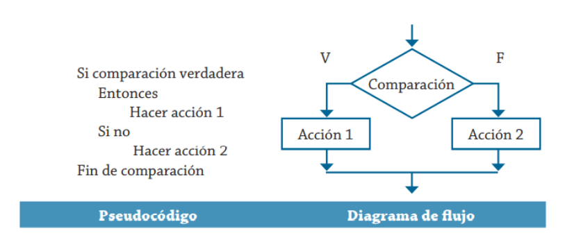
Exemple 1. Es desitja implementar un algorisme per determinar quin dels dos valors proporcionats és el major. Representa-ho amb pseudocodi i diagrama de flux.
Es pot establir que les variables que s'han d'utilitzar són les mostrades en aquesta taula.
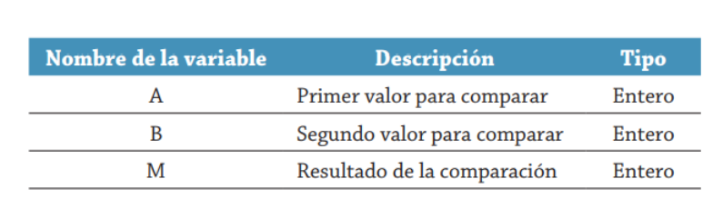
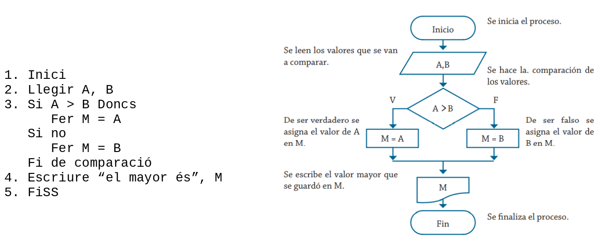
Exemple 2. Realitza un algorisme per determinar si un número és positiu o negatiu. Representa-ho en pseudocodi i diagrama de flux. Per a aquest cas, la taula següent mostra les variables que es requereixen en la solució del problema.
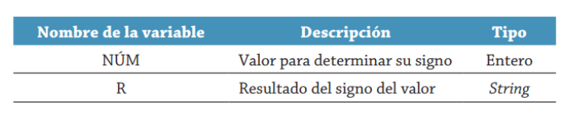
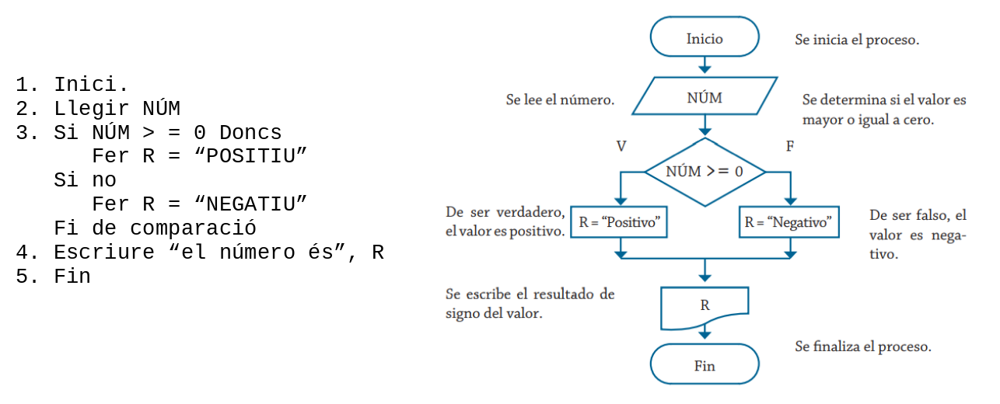
Fins ara, els problemes vists només presenten una decisió per realitzar un determinat procés; no obstant això, en algunes ocasions és necessari elaborar estructures selectives en cascada o niades, això significa que després d'haver realitzat una comparació selectiva és necessari realitzar una altra comparació selectiva com a resultat de la primera condició. En la figura següent es presenten les formes correcta i incorrecta d'estructurar el pseudocodi per a aquest cas:
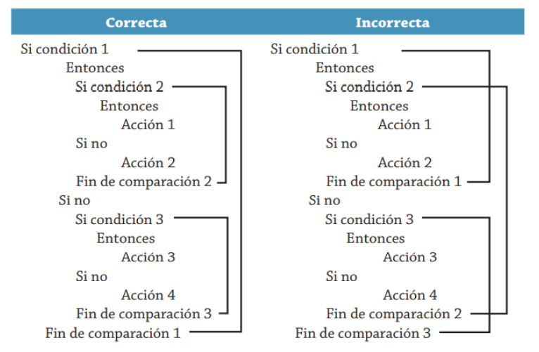
El seu diagrama de flux seria:
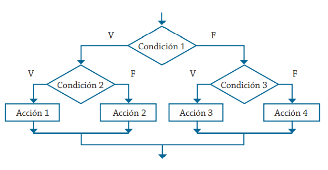
Exemple 3. Es requereix determinar quina de les tres quantitats proporcionades és la major. Realitza el seu respectiu algorisme i representa'l mitjançant un diagrama de flux i pseudocodi. Les variables que intervenen en la solució d'aquest problema es mostren a continuació.
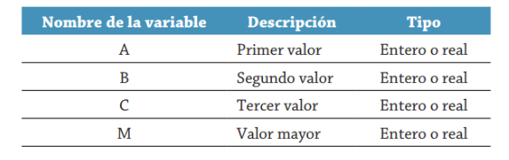
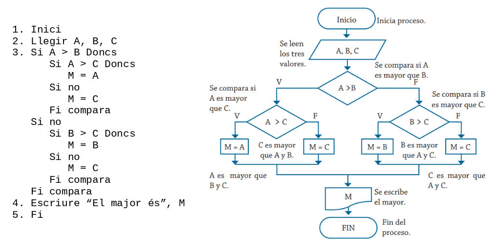
Estructures condicionals amb Java.
En Java l'estructura condicional s'implementa mitjançant:
- Instrucció if.
- Instrucció switch.
- Instrucció condicional ? :
Instrucció IF
Pot ser del tipus:
- Condicional simple: if
- Condicional doble: if … else …
- Condicional múltiple: if … else if …
La condició ha de ser una expressió booleana (condició), és a dir, ha de donar com a resultat un valor booleà (true o false).
Condicional simple
S'avalua la condició i si aquesta es compleix s'executa una determinada acció o grup d'accions. En cas contrari se salten aquest grup d'accions.
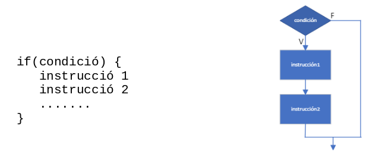
Si el bloc d'instruccions té una sola instrucció no és necessari escriure les claus { } encara que per evitar confusions es recomana escriure les claus sempre.
Exemple 4. Programa Java amb estructura condicional.
/*
* Programa que demana una nota per teclat i mostra un missatge si la nota
* és major o igual que 5
*/
void main() {
int nota;
IO.print("Nota: ");
nota = Integer.parseInt(IO.readln());
if (nota >= 5) {
IO.println("Enhorabona!!");
IO.out.println("Has aprovat");
}
}
Condicional doble
S'avalua la condició i si aquesta es compleix s'executa una determinada instrucció o grup d'instruccions. Si no es compleix s'executa una altra instrucció o grup d'instruccions.
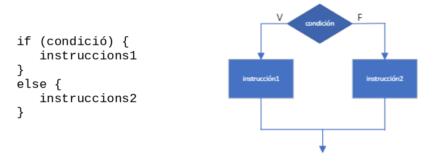
Exemple 5. Programa Java que conté una estructura condicional doble.
/*
* Programa que demana una nota per teclat i mostra si s'ha aprovat o no
*/
void main() {
int nota;
IO.print("Nota: ");
nota = Integer.parseInt(IO.readln());
if (nota >= 5) {
IO.println("Enhorabona!!");
IO.println("Has aprovat");
}
else {
IO.out.println("Ho sent, has suspès");
}
}
Exemple 6. Programa Java que conté una estructura condicional doble.
/*
* Programa que demana un número per teclat i calcula si és parell o imparell
*/
void main() {
int num;
IO.println("Introduïu número: ");
num = Integer.parseInt(IO.readln());
if ((num % 2) == 0)
IO.println("PARELL"); // Només hi ha 1 instrucció
else
IO.println("IMPARELL");
}
Condicional múltiple
S'obté niant sentències if … else. Permet construir estructures de selecció més complexes.
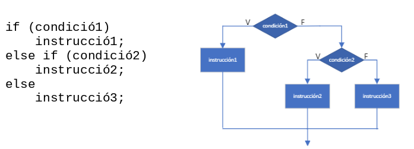
Cada else es correspon amb l'if més pròxim que no haja estat emparellat. Una vegada que s'executa un bloc d'instruccions, l'execució continua en la següent instrucció que aparega després de les sentències if … else niades.
Exemple 7. Programa Java que conté una estructura condicional múltiple.
/*
* Programa que mostra una salutació diferent segons l'hora introduïda
*/
void main() {
int hora;
IO.print("Introduïu una hora (un valor enter): ");
hora = Integer.parseInt(IO.readln());
if (hora >= 0 && hora < 12)
IO.println("Bon dia");
else if (hora >= 12 && hora < 21)
IO.println("Bona vesprada");
else if (hora >= 21 && hora < 24)
IO.println("Bona nit");
else
IO.println("Hora no vàlida");
}
Exemple 8. Programa Java que conté una estructura condicional múltiple.
/*
* programa que llegeix una nota i escriu la qualificació corresponent
*/
void main() {
double nota;
IO.print("Introduïu una nota entre 0 i 10: ");
nota = Double.parseDouble(IO.readln());
IO.print("La qualificació de l'alumne és ");
if (nota < 0 || nota > 10)
IO.println("Nota no vàlida");
else if (nota == 10)
IO.println("Matrícula d'Honor");
else if (nota >= 9)
IO.println("Excel·lent");
else if (nota >= 7)
IO.println("Notable");
else if (nota >= 6)
IO.println("Bé");
else if (nota >= 5)
IO.println("Suficient");
else
IO.println("Suspès");
}
Comparar String en Java
Per comparar el contingut de dues cadenes en Java s'usa el mètode equals:
En cas que una cadena coincidisca exactament amb una constant es pot usar ==
Per comparar Strings en l'ordre alfabètic s'usa el mètode compareTo:
if (cadena1.compareTo(cadena2) < 0) // cadena1 abans que cadena2
if (cadena1.compareTo(cadena2) > 0) // cadena1 després que cadena2
if (cadena1.compareTo(cadena2) == 0) // cadena1 igual que cadena2
Operador condicional ? :
Es pot utilitzar en substitució de la sentència de control if-else. Els formen els caràcters ? i :
S'utilitza de la forma següent:
Si expressió1 és certa llavors s'avalua expressió2 i aquest serà el valor de l'expressió condicional. Si expressió1 és falsa, s'avalua expressió3 i aquest serà el valor de l'expressió condicional.
Exemple 9. Programa Java que conté un operador condicional.